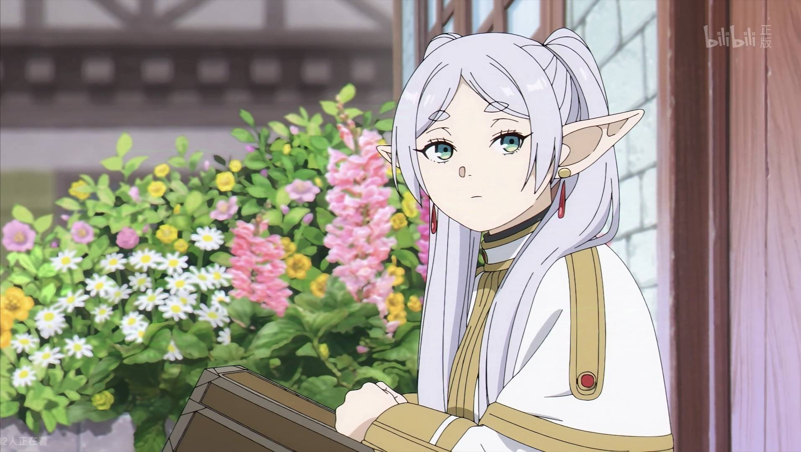

动漫介绍
《葬送的芙莉莲》
《葬送的芙莉莲》是山田钟人原作、阿部司作画的日本漫画作品，于2020年4月28日起在《周刊少年Sunday》上连载。截至2023年6月，单行本累计发行量已突破1000万册。
故事讲述了精灵魔法使芙莉莲与勇者辛美尔等人一起打倒魔王后，约定再次相见，但时光飞逝，50年后重逢时，辛美尔已老去。芙莉莲对人类的生命短暂感到震撼，于是决定重新学习人类，开始一段新的旅程。
作品以独特的视角探讨了时间、记忆与生命的意义，描绘了芙莉莲在漫长岁月中对人类情感的理解过程，被誉为"一部让人思考生命意义"的奇幻作品。
2023年，《葬送的芙莉莲》荣获第14届漫画大奖和第25届手冢治虫文化奖新生奖，并于同年9月宣布动画化，由Madhouse制作，于2023年秋季播出。
